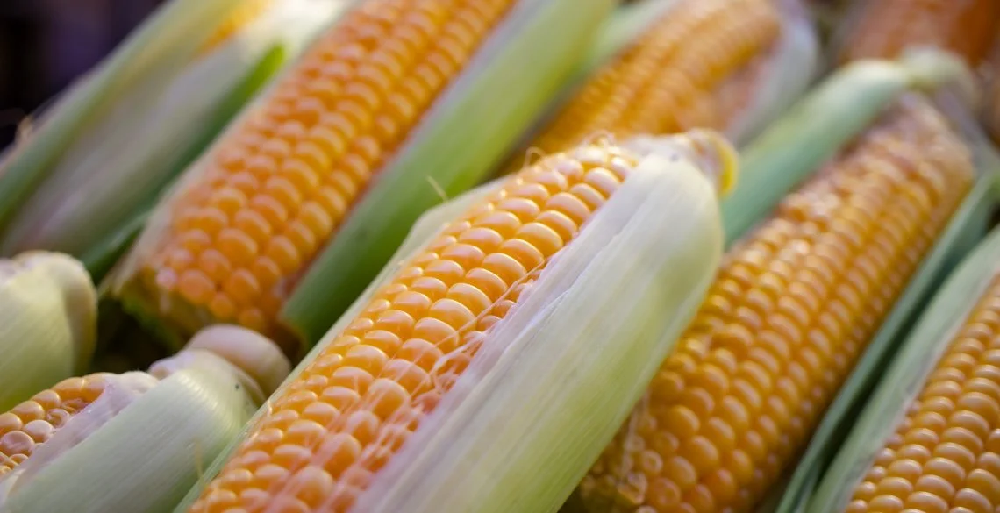
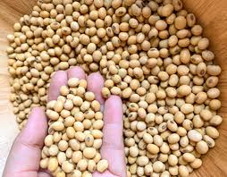
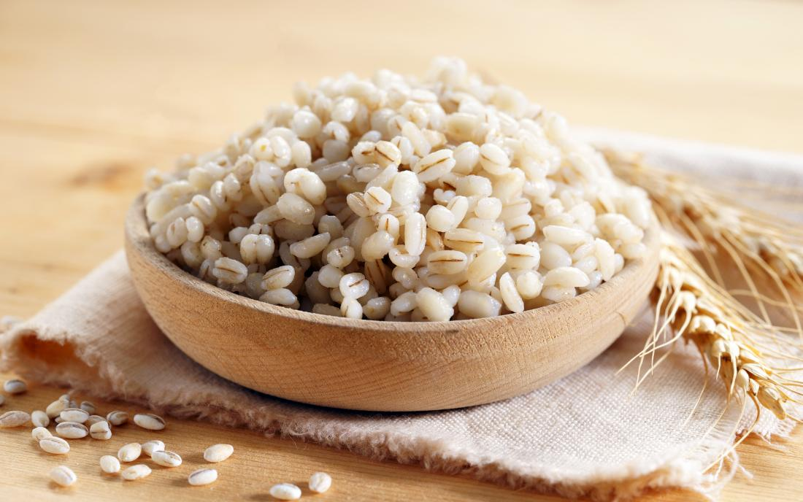
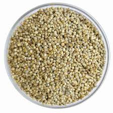

Benefits of Crop Diversity
Diversifying crops helps maintain the health of soil, reduces dependency on single crop types, and supports sustainable agriculture practices.

Wheat

Rice

Maize

Soybean

Barley

Millet